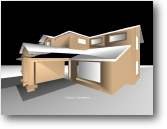

Camera Movement Aim: Move the camera around 3d space
|
 |
So far we have just used a static camera, which just sits there - pointing at the screen. But in the real world of PC games - we will want it to follow the main character around, (if a third person view is required - such as Tomb Raider) or perhaps give us a more personal view such as a first person view (used in Quake or Unreal).
Take a good look at Mr Sibly's 'Marko' demo for a great example of an intelligent camera. The code to control your camera can be just as complicated as the main game code... if you want it to be !
Let's have a look at a basic example:
| Graphics3D 800,600 SetBuffer BackBuffer() camera=CreateCamera() CameraViewport camera,0,0,800,600 light=CreateLight() house=LoadMesh( "house.3ds" ) RotateEntity house,0,90,0 While Not KeyHit(1) If KeyDown(200) Then MoveEntity camera,0,0,1 EndIf If KeyDown(208) Then MoveEntity camera,0,0,-1 EndIf If KeyDown(203) Then TurnEntity camera,0,1.0,0 EndIf If KeyDown(205) Then TurnEntity camera,0,-1.0,0 EndIf UpdateWorld RenderWorld Text 335,500,"Camera Movement" Flip Wend End |
Using the cursor keys you can explore the environment, The UP & DOWN cursors moving forward and back in space - the LEFT & RIGHT cursors panning the camera around on the spot.
There's not really much more to it, we have already covered movement and rotation in the previous tutorial. The only difference here is that we are moving forward into the screen. Just as we moved the shape, we use the same MoveEntity and TurnEntity commands to move the camera, That's what makes B3D such a great language to learn !.
Instead of having to remember loads of different commands for objects, cameras and lights - we just use the same instructions.
Perhaps you want to make the view bob up and down, such as the walking motion in Quake or Doom.. easy enough, just create a loop that moves the height of the camera up and down. I'll leave the actual coding part up to you !.
By Default Blitz3D will stop drawing an object if it is too far away from the camera, this is known as the CAMERA RANGE. Anything past its region will not be drawn. This is very handy if we have alot on screen, anything far into the distance will not show - meaning that we gain some extra processing time.
BUT WAIT... Blitz3D can also give us a fog effect !. We've all seen games that use it, (Unreal or example). The further the object is away from the camera the less we can see it. For more info on these functions see the doc's under Camera Commands. Used correctly, the fog commands can give a 3D world something of a sinister lifelike look !.